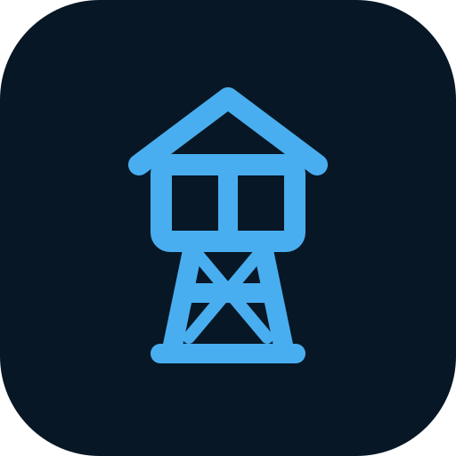

Sal0 TowerAtualizações do seu servidorConectando
Sem conexão com o painel. Tentando novamente…
SEU SERVIDOR EM DIA
Atualizações sob controle.
Acompanhe seus containers e deixe
o Watchtower cuidar das atualizações.
Containers monitorados—Conforme os filtros atuais
Exclusões no Watchtower—Configuração preservada
Última solicitação—Pronto para acompanhar
Aplicativos e stacks
Os aplicativos do seu ZimaOS, organizados em um só lugar.
Carregando aplicativos…Stacks agrupadas automaticamente
Conecte os dados do ZimaOS pelo compose atualizado do Sal0 Tower para mostrar seus nomes personalizados.
Nenhum aplicativo encontrado com esses filtros.
As etiquetas e os filtros nativos continuam valendo. Remover uma exclusão não ignora uma etiqueta de bloqueio ou um escopo diferente.
WATCHTOWER INDEPENDENTE
Controle do serviço
O agendamento continua funcionando com o painel fechado.
Registros recentes
Resultados e falhas informados pelo próprio Watchtower.
Os registros aparecerão aqui.